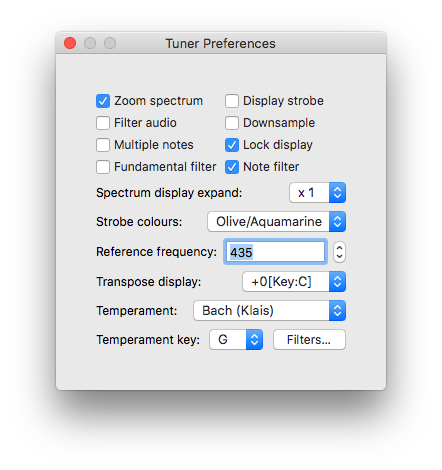

Introduction
Tuner is a musical intrument tuner developed for tuning accordions. It has many features intended to help with this.
  |
Displays
- Scope display, showing the waveform picked up by the microphone
- Spectrum display, showing the spectrum generated, which may be zoomed in to show the tuning of up to eight reeds.
- Data display showing the current note, cents error, frequency error, reference note frequency and actual measured frequency
- Strobe display, which may be hidden to remove distraction
- Staff display, which replaces the strobe display when hidden
- Meter display, showing the cents error